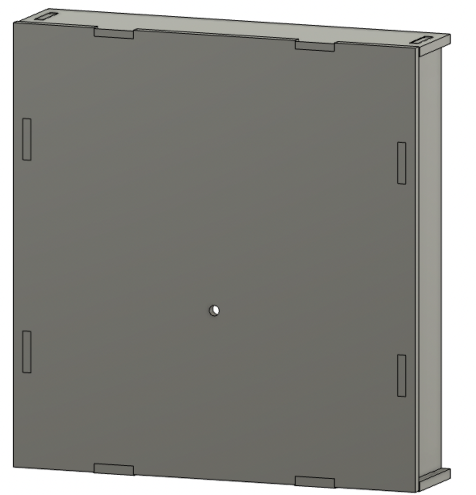
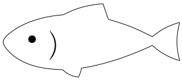
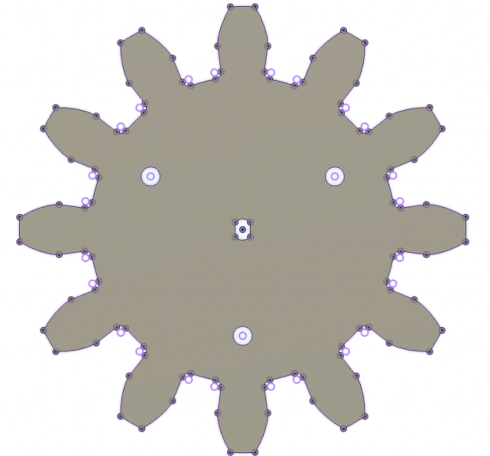
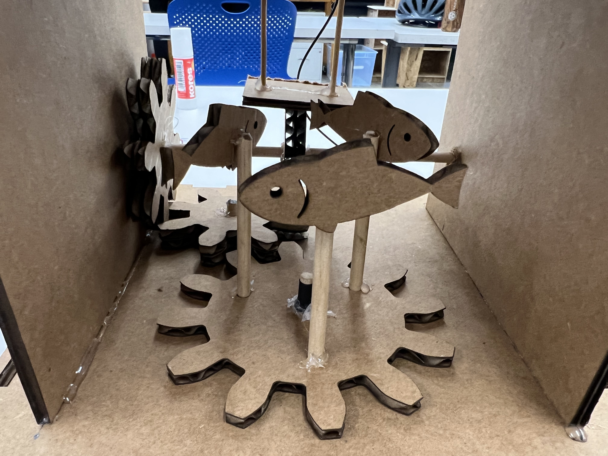
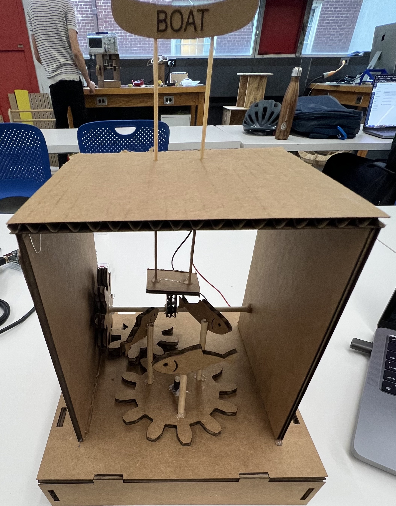

Week 3: Kinetic Sculpture
Outline:
This week's goal was the creation of a kinetic sculpture as a synthesis of the skills we've learned so far. To create my project, I used laser cutting, CAD design, sawing, glueing, soldering, and more! The main constraint of the project was the use of a DC motor to create the motion in the system.
Ideation:
For some reason, I instantly had the idea of fish as a central theme for my project. When thinking of ideas, this took a lot of forms: fish under water, fish on a track, fish jumping out of the water, and more. As I thought through these different types of motion, I decided to pick one with 2 types fo motion: rotational and linear. This would force me to get comfortable with converting between types of motion, and would be a different sort of challenge than using a complex setup with one type of motion.
Thus, I decided to make a two-pronged project. First, a motor would rotate a circular platform on which fish would be attached. Second, a boat would be pushed up and down on a platform above the fish. There were examples in the resources and in lab on both rotational motion (directly from motor) and linear motion (from a makeshift camshaft), so the challenge with this build was implementing the converter between them.
Overall, this idea has 3 components: the housing for the system, the rotating fish, and the bobbing boat.
Fish:
I first created rectangular housing for the system, which consisted of, in mm, a 200 x 200 x 40 base with a 150 mm3 open box on top. The base was designed using the press-fit methods from the previous week, while the box on top was attached with hot glue. A 3D model of the base is shown below. The motor is housed within the base and interacts with the rest of the system through the hole in the top of the base.
I slightly changed around the design of the base so that two of the sides could be easily removed while the rest of the system remains stable. This allows for open access to the motor from the back. On my second iteration, I felt happy with the housing and hot glued the open box on top.
Then, it was time to move on to the fish. All I needed to do was lasercut some fish, glue them onto small wooden dowels, and attach those dowels onto a circular platform. That platform would then be connected to the motor. I downloaded a fish .png and modified in Adobe Illustrator, exporting my new fish as a .svg file.
I glued the fish to small dowels, which I then stuck into the platform. All of this was just proof-of-concept (or maybe proof-of-proof-of-concept) to see something moving, so the platform was nothing fancy. Here's iteration 1, where I didn't really glue anything down. Although even with the glue I think it would look similarly. I was aiming to capture the peaceful feeling of spending time in a boat with fish lazing the day away beneath your feet, swimming without a clear purpose.

Boat:
Time to integrate linear motion into my spinning fish! I designed a larger central gear with pitch diameter 90 mm on which my fish would spin. This large gear also has small circular cutouts for the fish to be inserted and secured with glue.
This gear would then connect to another parallel gear, which slots into a perpendicular gear. This changes the axis of rotation. I can now use that rotated motion to power a sort of camshaft, just a dowel with an off-centered circle glued to it. This reciprocal motion can be applied to a platform connected to my boat above, which then creates (ideally) a linear effect. See below for the final construction.
Next Steps:
I wasn't able to put a lot of the pieces together until close to the end of the assignment; for that reason, I opted not to use more sturdy materials like wood and acrylic. With the experience I gained putting this setup together, I'd like to use gears to make a more complicated type of motion, such as the characters animated by Disney, or the like. Still, I'd like to keep the theme of this project. Aesthetically, marine themed. In terms of execution, I want all pieces, even those that are just converting between space or types of motion, to be part of the design itself.